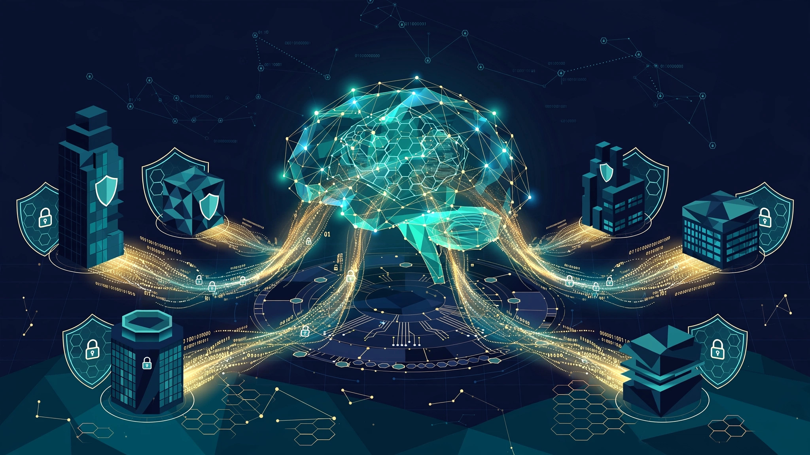

System and Method for Continuous Federated Fine-Tuning of Enterprise Language Models with Differential Privacy, Secure Aggregation, and Sovereignty Scoring

Abstract
Disclosed is a system and method for continuous federated fine-tuning of enterprise large language models (LLMs) that captures organizational context from heterogeneous internal data sources — including email archives, document repositories, Slack workspaces, and meeting transcripts — without centralizing sensitive data on any single server or third-party infrastructure. The system deploys department-specific Low-Rank Adaptation (LoRA) adaptor modules that are trained locally on each department's data, with only differentially private gradient updates transmitted to a central aggregation server using secure multi-party computation protocols. A novel "sovereignty score" metric continuously measures the proportion of proprietary organizational context captured in locally fine-tuned model adaptors versus the proportion that remains accessible only through external API-rented foundation models, enabling enterprises to quantify their dependency on third-party AI providers and plan migration strategies.
Field of the Invention
This invention relates to enterprise artificial intelligence infrastructure, specifically to federated machine learning systems for fine-tuning large language models on proprietary organizational data while preserving data residency, departmental access controls, and differential privacy guarantees.
Background
Enterprise spending on large language model APIs has grown rapidly since 2023. The enterprise LLM market reached $5.90 billion in 2025 and is projected to grow at 28.3% CAGR to $91.48 billion by 2036 (Future Market Insights, 2026). Approximately 59% of enterprise LLM deployments use cloud-based APIs from providers such as OpenAI, Anthropic, and Google, creating significant dependency on external vendors for core business intelligence capabilities.
The economic break-even analysis between API-based and self-hosted LLM inference has been studied extensively. Pan et al. (2025) presented a cost-benefit framework demonstrating that on-premise deployment becomes economically viable at sustained throughputs above 1-5 million tokens per day, with break-even timelines of 18-24 months depending on hardware configuration and API pricing. SitePoint's 2026 TCO analysis found that organizations processing over 10 million tokens daily save $70,000+ annually by self-hosting, while those below 500,000 tokens daily should remain on cloud APIs.
However, cost is not the only driver. Enterprise data sovereignty concerns — the ability to retain control over proprietary organizational knowledge without exposing it to third-party model providers — have emerged as a primary motivation for self-hosted fine-tuning. When an enterprise sends proprietary documents, customer communications, and strategic plans through external APIs, the organizational context embedded in those queries becomes an implicit training signal that the enterprise does not control.
Federated learning (FL) offers a privacy-preserving framework for collaborative model training. Google deployed the first production neural network with formal differential privacy guarantees using the DP-FTRL algorithm for next-word prediction in Gboard (2022), achieving ρ=0.81 zero-Concentrated Differential Privacy (zCDP). Guo et al. (2025) demonstrated that even with federated learning, attackers can extract training data from global models using generation methods, with leakage increasing as model size grows — underscoring the need for differential privacy defenses beyond simple parameter aggregation.
Several patents address aspects of federated learning for enterprise contexts. US20220374762A1 (IBM, 2022) describes trusted and decentralized aggregation using TEEs with model-parameter-granularity partitioning across encrypted virtual machines. US20230177378A1 (IBM, 2023) covers orchestration of federated learning across multi-infrastructure and hybrid cloud environments with automated recovery. US20250245571A1 (2025) describes large model federated learning using incremental parameters (analogous to LoRA adaptors) with server-side aggregation and client-side parameter freezing.
The gap in the art is a complete, enterprise-oriented system that: (a) applies federated fine-tuning specifically to organizational knowledge captured across heterogeneous internal data sources (email, documents, chat, meetings); (b) trains department-specific LoRA adaptors rather than full models, enabling granular access controls; (c) combines differential privacy with secure aggregation to protect both individual data records and departmental model updates; and (d) provides a quantitative "sovereignty score" metric that enables enterprises to measure and optimize their dependency on external AI providers over time.
Detailed Description
1. System Architecture Overview
The system comprises three tiers: (a) Department Data Nodes, each deployed within a department's existing data infrastructure (on-premise servers or department-controlled cloud tenancy); (b) an Aggregation Service running within a trusted execution environment (TEE) such as Intel SGX, AMD SEV-SNP, or AWS Nitro Enclaves; and (c) a Model Registry and Sovereignty Dashboard accessible to enterprise IT administrators. All inter-tier communication uses mutual TLS with certificate pinning and end-to-end encryption of gradient payloads.
2. Data Source Connectors
Each Department Data Node runs a set of data source connectors that extract and preprocess text from organizational systems. Supported connectors include:
- Email connector: Integrates with Microsoft Exchange/Graph API and Google Workspace Gmail API. Extracts email body text, subject lines, and thread context. Applies PII redaction using named entity recognition before tokenization. Processes approximately 500 emails per employee per month, yielding ~2,500 training examples per department of 50 employees per monthly cycle.
- Document connector: Indexes SharePoint, Google Drive, Confluence, and local file shares. Supports PDF, DOCX, PPTX, and Markdown formats. Chunks documents into 512-token training segments with 64-token overlap. A 10,000-document repository yields approximately 150,000 training chunks.
- Messaging connector: Connects to Slack (via Slack API with Enterprise Grid scopes), Microsoft Teams (via Graph API), and compatible platforms. Extracts conversational threads with context windows of 5-15 messages. Filters automated bot messages and system notifications.
- Meeting transcript connector: Integrates with Zoom, Microsoft Teams, and Google Meet transcript APIs. Segments transcripts by speaker turn. Generates question-answer training pairs from meeting discussions using a lightweight extractive summarization model running locally on the Department Data Node.
3. Department-Specific LoRA Adaptor Training
Rather than fine-tuning a complete language model, each Department Data Node trains a Low-Rank Adaptation (LoRA) module (Hu et al., 2021) against a frozen foundation model. LoRA adaptors add trainable low-rank decomposition matrices (A ∈ ℝ^{d×r}, B ∈ ℝ^{r×k} where r << min(d,k), typically r=8 to 64) to each attention layer's query and value projection matrices. This reduces the trainable parameter count from billions (for the full model) to 1-10 million per adaptor, enabling training on commodity GPU hardware (single NVIDIA A10G or L4, ~$0.50-0.75/hour on cloud instances).
Each department's LoRA adaptor captures the department's domain vocabulary, communication patterns, technical terminology, project context, and organizational relationships. The adaptor is stored locally on the Department Data Node and is never transmitted to the aggregation server in its complete form.
Training runs on a configurable schedule: default is weekly batch training on the previous week's accumulated data, with a minimum training set size of 1,000 examples to ensure meaningful gradient updates. Each training run uses 3-5 epochs with learning rate 1e-4 and cosine annealing, requiring approximately 2-4 GPU-hours per department per weekly cycle.
4. Differentially Private Gradient Computation
Before transmitting any gradient information to the aggregation server, each Department Data Node applies user-level differential privacy using the DP-SGD algorithm (Abadi et al., 2016). The process involves:
- Per-example gradient clipping: Each training example's gradient contribution is clipped to a maximum L2 norm C (default C=1.0), ensuring that no single email, document, or message can disproportionately influence the model update.
- Gaussian noise addition: After clipping, calibrated Gaussian noise N(0, σ²C²I) is added to the aggregated gradient, where σ is computed using the moments accountant (Abadi et al., 2016) to achieve a target per-round privacy budget (ε, δ). Default target: ε=8.0, δ=10⁻⁵ per training round, with composition across rounds tracked using Rényi Differential Privacy (RDP) accounting.
- Privacy budget management: A cumulative privacy budget tracker prevents any department from exceeding a configurable annual privacy budget (default: ε_annual=50, which permits approximately 40-50 weekly training rounds at ε=1.0-1.25 per round using advanced composition).
5. Secure Aggregation Protocol
The aggregation server combines differentially private gradient updates from participating departments using a secure aggregation protocol based on Bonawitz et al. (2017). Each department encrypts its gradient update using a pairwise secret-shared masking scheme: for N participating departments, each pair (i, j) agrees on a shared random mask s_{ij} such that department i adds s_{ij} to its update and department j subtracts s_{ij}. When the server sums all N masked updates, the masks cancel and only the aggregate gradient remains visible to the server. No individual department's update is ever revealed.
The protocol tolerates up to N/3 dropout departments per round (departments that begin the protocol but fail to complete it) using Shamir's secret sharing for mask recovery. The server operates within a TEE, providing hardware-level attestation that the aggregation code has not been tampered with and that individual updates are never written to persistent storage.
6. Cross-Department Model Composition
After aggregation, the system produces two types of model artifacts: (a) department-specific LoRA adaptors (trained only on that department's data, stored locally) and (b) a global enterprise LoRA adaptor (aggregated from all participating departments' gradient updates). An enterprise user can query with any combination of adaptors loaded simultaneously using LoRA composition techniques (linear weight merging or adapter switching based on query classification). A query about a cross-departmental project, for example, might activate both the Engineering and Marketing adaptors simultaneously.
Access control is enforced at the adaptor level: a user in the Finance department may be authorized to use the Finance-specific adaptor and the global enterprise adaptor, but not the Legal department's adaptor, even though the global adaptor contains aggregated (and differentially private) gradient contributions from Legal's data. This granularity is impossible with traditional monolithic fine-tuning.
7. Sovereignty Score Computation
The sovereignty score S ∈ [0, 1] quantifies the proportion of an enterprise's proprietary context that has been captured in locally-controlled model adaptors versus what remains accessible only through external API-rented foundation models. The score is computed as:
S = 1 - (Q_external / Q_total)
where Q_total is the total count of enterprise queries over a measurement period, and Q_external is the count of queries where the locally fine-tuned model (foundation + enterprise LoRA adaptors) produced responses rated as insufficient by an automated quality evaluator, requiring fallback to an external API for acceptable results. The quality evaluator uses a combination of: (a) perplexity comparison (local model perplexity on the query domain vs. external API perplexity, estimated from response coherence); (b) factual grounding score (percentage of response claims verifiable against the enterprise's document corpus); and (c) task completion rate for structured tasks (code generation, summarization, classification).
A sovereignty score of 0.75 means that 75% of enterprise queries are adequately served by locally fine-tuned models, with only 25% requiring external API fallback. The dashboard tracks sovereignty score over time by department, query category, and data domain, enabling targeted fine-tuning investment in areas where external dependency is highest.
8. Continuous Learning Pipeline
The system operates as a continuous learning pipeline rather than a one-time fine-tuning event:
- Data ingestion: Connectors continuously index new emails, documents, messages, and meeting transcripts as they are created (with configurable lag, default 24 hours, to allow for document edits and email thread completion).
- Training scheduling: Department Data Nodes train on configurable schedules (weekly by default). The system automatically adjusts training frequency based on data volume: departments with high data throughput (>10,000 new training examples per week) may train twice weekly; departments with low throughput (<500 examples per week) may train biweekly.
- Adaptor versioning: Each training round produces a new adaptor version. The Model Registry maintains a versioned history with automatic rollback if a new adaptor version degrades sovereignty score by more than 5% on a held-out evaluation set.
- Foundation model migration: When the enterprise upgrades its foundation model (e.g., from Llama 3.1 70B to Llama 4 405B), the system automatically re-initializes LoRA adaptors and begins a fresh training cycle, transferring knowledge from previous adaptors through a distillation step where the old adaptor's outputs are used as soft labels for the new adaptor's initial training rounds.
9. Figures Description
- Figure 1: System architecture showing Department Data Nodes (with data source connectors), secure aggregation server within TEE, Model Registry, and Sovereignty Dashboard, with data flow arrows indicating encrypted gradient transmission and adaptor distribution paths.
- Figure 2: LoRA adaptor training pipeline for a single department, showing data ingestion from email/documents/Slack/meetings, preprocessing with PII redaction, DP-SGD gradient computation with clipping and noise addition, and local adaptor storage.
- Figure 3: Secure aggregation protocol flow diagram showing pairwise mask generation, masked gradient upload from N departments, mask cancellation at the aggregation server, and global adaptor gradient distribution.
- Figure 4: Sovereignty score dashboard mockup showing score trend over 12 months (rising from 0.35 to 0.78), broken down by department and query category, with cost savings projection showing $162,800 annual API cost reduction at S=0.75 for a 500-employee organization.
Claims
- A system for federated fine-tuning of enterprise language models, comprising: a plurality of Department Data Nodes, each deployed within a department's data infrastructure and configured to extract text from heterogeneous internal data sources including email, documents, messaging platforms, and meeting transcripts; wherein each Department Data Node trains a Low-Rank Adaptation (LoRA) module against a frozen foundation language model using only locally available data, applies per-example gradient clipping and calibrated Gaussian noise to achieve differential privacy guarantees, and transmits only differentially private gradient updates to a secure aggregation server.
- The system of claim 1, wherein the secure aggregation server operates within a trusted execution environment (TEE) and combines gradient updates from multiple Department Data Nodes using a pairwise secret-shared masking scheme such that no individual department's gradient update is revealed to the server or to other departments.
- The system of claim 1, further comprising a sovereignty score computation module that continuously measures the proportion of enterprise queries adequately served by locally fine-tuned model adaptors versus queries requiring fallback to external API-rented foundation models, producing a quantitative sovereignty score S ∈ [0, 1].
- The system of claim 3, wherein the sovereignty score is computed using a combination of perplexity comparison between local and external model responses, factual grounding scores measuring response claims verifiable against the enterprise document corpus, and task completion rates for structured tasks.
- The system of claim 1, wherein department-specific LoRA adaptors enforce access controls at the adaptor level, such that a user authorized to access one department's adaptor cannot access another department's adaptor, even when a global enterprise adaptor aggregated from all departments' differentially private gradient contributions is available.
- A method for continuous federated fine-tuning of enterprise language models comprising: deploying data source connectors on department-controlled infrastructure to continuously extract and preprocess text from organizational email, documents, messaging platforms, and meeting transcripts; training department-specific LoRA adaptors on a configurable schedule using locally accumulated data with differential privacy applied via per-example gradient clipping and Gaussian noise addition; transmitting only differentially private gradient updates to a secure aggregation server operating within a TEE; computing a global enterprise LoRA adaptor by aggregating gradient updates using secure multi-party computation; and versioning each adaptor in a Model Registry with automatic rollback upon sovereignty score degradation.
- The method of claim 6, further comprising a privacy budget management module that tracks cumulative privacy expenditure per department using Rényi Differential Privacy accounting and prevents any department from exceeding a configurable annual privacy budget by throttling or pausing training rounds when the budget is near exhaustion.
- The method of claim 6, further comprising a foundation model migration procedure that, upon upgrade of the underlying foundation model, re-initializes LoRA adaptors and transfers knowledge from previous adaptors through a distillation step using the old adaptor's outputs as soft labels for the new adaptor's initial training rounds.
- The system of claim 1, wherein the Department Data Node's data source connectors apply PII redaction using named entity recognition before tokenization, and wherein meeting transcript connectors generate question-answer training pairs from speaker-segmented transcripts using a locally-deployed extractive summarization model.
- The system of claim 1, wherein LoRA adaptor composition enables concurrent activation of multiple department-specific adaptors for cross-departmental queries, with query classification determining which combination of adaptors to activate based on the query's topic domain and the user's access authorization level.
- The system of claim 3, wherein the sovereignty dashboard displays sovereignty score trends over time disaggregated by department, query category, and data domain, and projects annual API cost savings based on current sovereignty score and historical query volume, enabling enterprise IT administrators to prioritize fine-tuning investment in areas where external API dependency is highest.
- A computer-readable medium storing instructions that, when executed by a processor, cause the processor to perform the method of claim 6, wherein the instructions further cause the processor to automatically adjust training frequency per department based on data throughput volume, training more frequently for departments exceeding a configurable high-throughput threshold and less frequently for departments below a low-throughput threshold.
Implementation Notes
A reference implementation uses PyTorch with the Hugging Face PEFT library for LoRA adaptor training, Opacus for differentially private SGD, and Flower (flwr) for federated learning orchestration. The aggregation server runs within AWS Nitro Enclaves or Intel SGX for hardware-level attestation. Data source connectors use OAuth 2.0 with the minimum required scopes for each platform (e.g., Mail.Read for Microsoft Graph, gmail.readonly for Google Workspace). The sovereignty score evaluator uses a lightweight classifier fine-tuned on a labeled dataset of query-response quality ratings collected during an initial calibration period of 2-4 weeks.
Prior Art References
- Future Market Insights, 2026 — Enterprise LLM market valued at $5.90B in 2025, 28.3% CAGR to $91.48B by 2036
- Pan et al., arXiv:2509.18101, 2025 — Cost-benefit analysis of on-premise LLM deployment vs. commercial API services
- Google Research, 2022 — First production FL deployment with formal differential privacy (DP-FTRL, ρ=0.81 zCDP)
- Guo et al., arXiv:2509.20680, 2025 — Federated learning vulnerabilities in LLM training: data extraction from global models
- Hu et al., arXiv:2106.09685, 2021 — LoRA: Low-Rank Adaptation of Large Language Models
- Abadi et al., arXiv:1607.00133, 2016 — Deep Learning with Differential Privacy (DP-SGD, moments accountant)
- Bonawitz et al., 2017 — Practical Secure Aggregation for Privacy-Preserving Machine Learning
- US20220374762A1 — IBM — Trusted and decentralized aggregation for federated learning with TEEs
- US20230177378A1 — IBM — Orchestrating federated learning in multi-infrastructure and hybrid environments
- US20250245571A1 — Large model federated learning with incremental parameters and server-side aggregation
- Hugging Face PEFT — Parameter-Efficient Fine-Tuning library (LoRA implementation)
- Opacus — PyTorch library for differentially private model training
- Flower (flwr) — Open-source federated learning framework
- TensorFlow Federated — Google's federated learning framework
Related
- 📰 Enterprise Model Sovereignty: The Proprietary Context Problem — Full article
- 🚀 Enterprise Model Ops Platform — Free startup idea